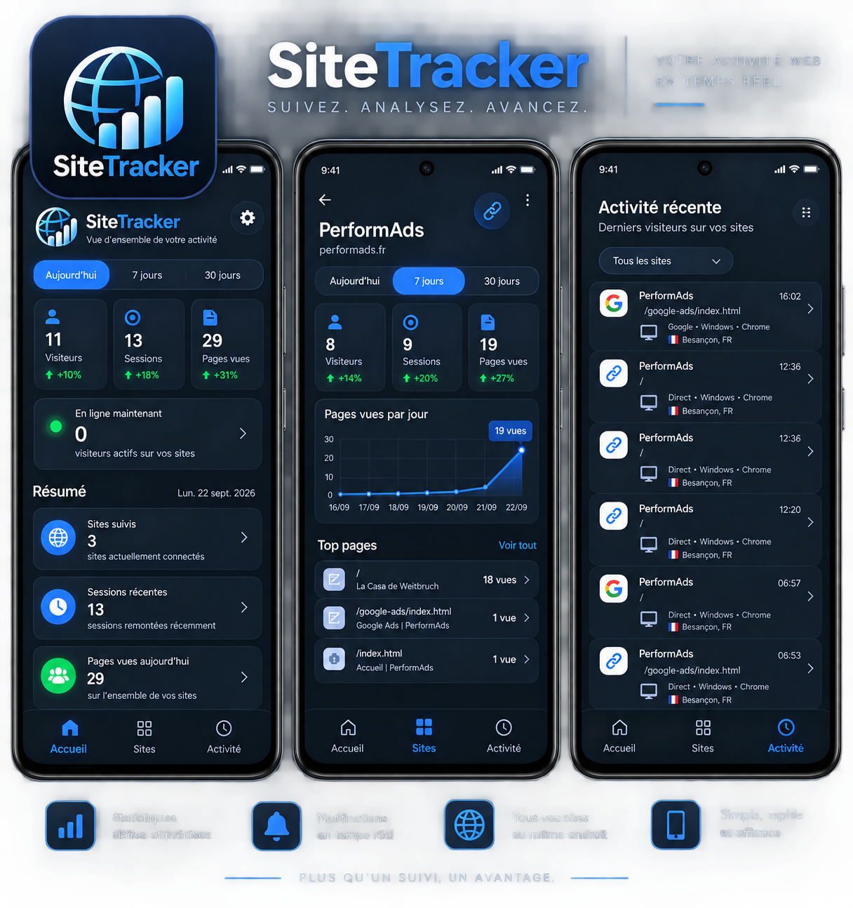
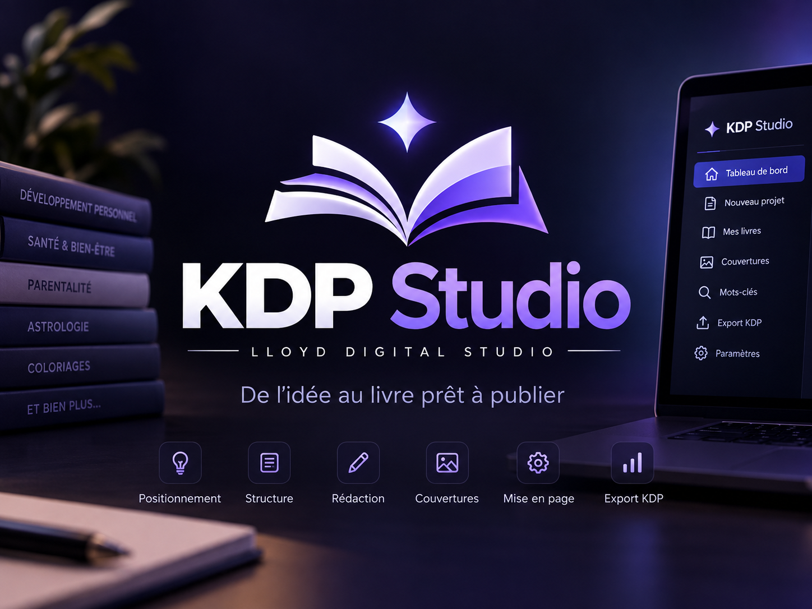

✦
APP / 01
ORYA
Une expérience de réflexion symbolique réunissant pendule, boule, tarot et pierre du jour.
DIVERTISSEMENT • INTROSPECTION
PROJETS / LLOYD DIGITAL STUDIO
Des outils conçus à partir de besoins concrets.
Du concept à une expérience réellement utilisable.
PROJET PHARE / 01
L’activité de vos sites, au même endroit.
SiteTracker centralise les visiteurs, sessions, pages consultées, appareils et localisation de plusieurs sites dans une interface mobile claire. Une approche indépendante pensée pour suivre l’essentiel sans passer par Google Analytics.

PROJET PHARE / 02
De l’idée au livre prêt à publier.
KDP Studio structure une chaîne éditoriale complète : positionnement, structure, rédaction, couvertures, mise en page et préparation à la publication. Le projet accompagne aussi bien des ouvrages longs que des collections de coloriage.

PROJET PHARE / 03
Transformer la prospection en système.
Lead Engine collecte et structure la recherche locale, analyse la présence web et aide à isoler les opportunités qui méritent réellement une action humaine.

APPLICATIONS
Des applications plus ciblées, chacune construite autour d’un usage simple et identifiable.
APP / 01
Une expérience de réflexion symbolique réunissant pendule, boule, tarot et pierre du jour.
DIVERTISSEMENT • INTROSPECTIONAPP / 02
Une roue aléatoire simple et immédiate pour laisser le hasard décider en quelques secondes.
UTILITAIRE • ANDROIDAPP / 03
Un niveau et mesureur d’angle mobile pensé pour aller directement à l’essentiel.
OUTIL • MESURELLOYD DIGITAL STUDIO
Applications, logiciels et expériences digitales pensés pour transformer une idée utile en produit.
Démarrer un projet →